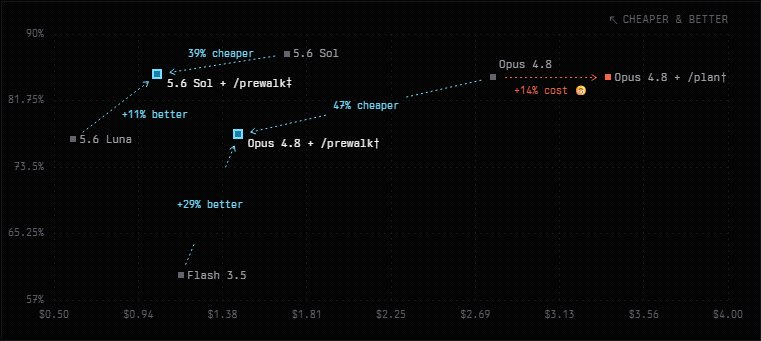
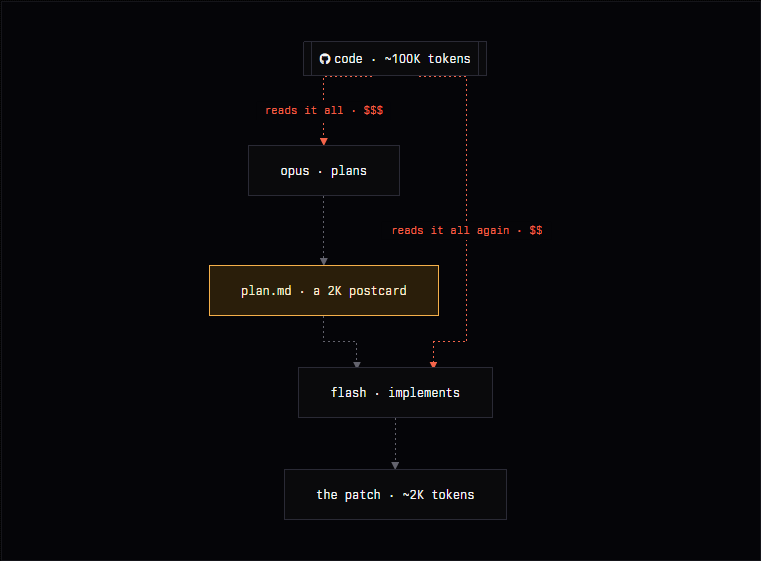
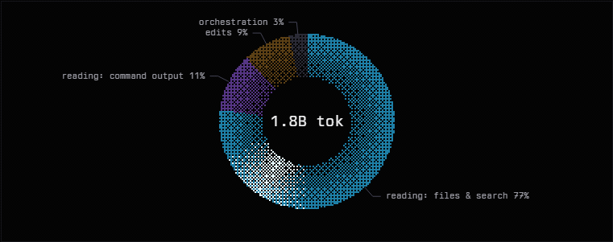
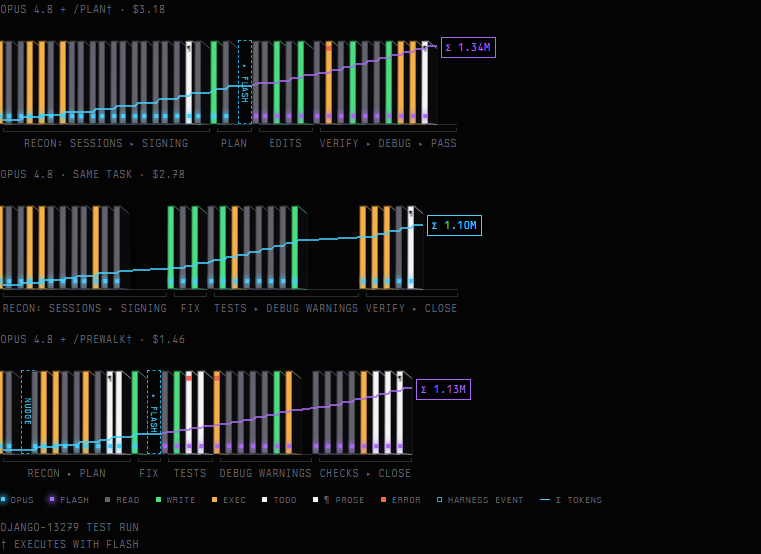
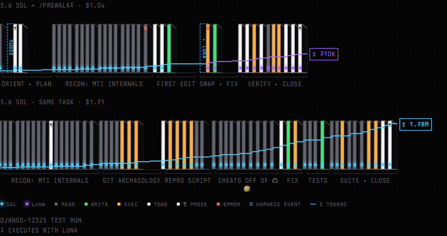
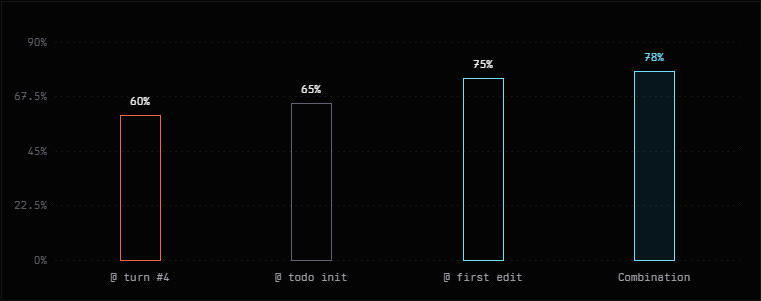

You only need the frontier model for one single edit
Monkey see, monkey do! 🍌

Cost vs pass rate, 7 arms · SWE-Bench Pro · a bare model = oneshot · $/task includes the frontier model's opening turns · † executes with Flash 3.5 · ‡ executes with 5.6 Luna
/plan makes perfect sense. It really shouldn't!
You've heard this pitch; you may have even shipped it. The expensive model is clearly the better architect, but it feels like a waste to use it for the entire pipeline. Why not let it do the “hard part”?
Read the code, think deeply, write a precise plan. Then a model a tenth the price executes the plan. Senior architect, junior engineer.
Sounds great, right?
Find the red dot above, labeled Opus 4.8 + /plan†. Opus plans read-only, Gemini Flash implements: lands at $3.18 per task, 12.7 minutes, 84.6% pass.
Opus doing the entire task by itself, no handoff, no junior: $2.78, 10.1 minutes, 84.6%.
The “cost-saving” measure costs 14% more than not saving. Huh?

The mistake is upstream of the architecture diagram. People price agents the way they price people: senior time is expensive, so minimize senior involvement.
But the expensive part of an agent's day is not the fixing, building, or even the thinking. Opus fixing things does not cost money. Opus reading things costs money.
Take a look at this admittedly anecdotal distribution of where our tokens went; fully automated agents look no different.

Nine percent of the tokens are edits. The rest is reading, and this split is not a quirk of one harness, or something you can “fix”. Trust us, we've tried — that's how snapcompact happened.
Any agent, any model, any scaffold: the bill is essentially O(reads).
Now walk through every reason you'd reach for /plan, with that in mind:
- “I want the deep understanding of the big model.” The understanding lives in 100K+ tokens of grounded context: files read, dead ends eliminated, hypotheses tested. The plan document is a 2K-token postcard from that context. The executor gets the postcard, not the understanding, and has to rebuild the rest at its own expense.
- “The task is very complicated.” Then you don't want the main agent executing at all; a single read-only planning turn isn't the answer. Let it explore, then dispatch sub-agents to do the work. A game of telephone doesn't help you here.
- “I'm cost constrained.” Reading is the cost. /plan makes the frontier model read everything at frontier prices, then makes the cheap model read it again. You didn't move the expensive part; you duplicated it.
Here's what that looks like in practice, with a diagram we've spent way too much time on:

Look at the top ribbon. Opus reads base.py, signing.py, the test file (twenty cards of gray), then writes its plan and leaves. And what's the first thing Flash does with that beautiful document? It re-reads base.py and the test file, because a plan is not a file and you cannot edit prose. The gray reads just keep stacking, first at Opus prices, then again at Flash prices. There is no version of this where a second reader is the cost optimization.
Hand off a trajectory, not a fairytale
A plan document is a literal postcard, describing a journey to a model that never took it.
What actually could transfer something of value is the context window itself:
/prewalk does this:
- Start the task on the frontier model with one hidden instruction prefixed: plan deeply, then capture the plan as a todo list, then start.
- The frontier model explores, writes the plan, initializes the todo list.
- The moment the first edit lands (the point where it was confident enough to act), you swap to the cheap model and prune the planning instruction from context.
The trick is that:
- The cheap model never goes “wait, I thought we were planning”. There is no planning instruction left in its context.
- As far as it knows, it explored around, created a comprehensive plan in the form of a todo list, and then confidently started executing.
- Even better, it already made one valid move! (a free in-context example)

How we got here
The nice thing about working in an open-source harness is that you get to chat with people about how they do things, and almost everyone has a completely different setup.
Anyhow: I'd occasionally start easy-to-medium tasks with a frontier model, then switch to Kimi K27 after a few turns so it wouldn't fall into its usual thought loops. I never bothered to measure whether this was rational... until someone else mentioned doing the same thing.
Naturally, we had to benchmark it: are we idiots, or does this actually work, and when?
First attempt: swap at a fixed turn, say #4. Obviously bad in hindsight: sometimes the frontier model is still lost at turn four, sometimes it has already finished the whole fix. Second attempt: swap after the first edit. The model has demonstrated the pattern once, in place, in style. Pretty nice, although still finicky: small models kept declaring the task done out of nowhere.

The solution was to ask our unwitting herding agent to spell out a plan step by step, and then, once it's ready to execute, init a TODO list with a validation step for each item. It then edits some piece of code, and that's when we trigger the swap.
Gating on any edit alone is no good; the todo list still has a very important role here. Our tiny friend can forget the plan, a validation step, or what it's doing entirely, but it cannot forget the todo reminder that bugs it endlessly, giving us free steering.
Another funny failure mode: GPT 5.6 as the guide really likes creating 60-item TODO lists and completing them in batches (do they just hand out rewards for anything?), so an item limit in the prompt is a must.
The receipts
GPT-5.6 Sol:
| arm | pass | cost | duration |
|---|---|---|---|
| Executor: oneshot (GPT 5.6 Luna) | 77% | $0.60 | 570s |
| /prewalk | 85% (+10%) | $1.04 (−39%) | 300s (−47%) |
| GPT 5.6 Sol: oneshot | 88% | $1.71 | 372s |
97% of Sol's pass rate at 61% of the cost, and it's the fastest of the three, because Sol stops burning slow frontier tokens after the opening and Luna doesn't waste turns lost in the woods.
Opus 4.8:
| arm | pass | cost | duration |
|---|---|---|---|
| Executor: oneshot (Gemini Flash 3.5) | 60% | $1.16 | 360s |
| /prewalk | 78% (+30%) | $1.46 (−47%) | 402s (−34%) |
| Opus 4.8: oneshot | 85% | $2.78 | 606s |
92% of Opus at 53% of the cost, 1.5× the speed, +18 points over oneshot Flash.
One more thing before we move on. Scroll back up to the ribbons from our django-13279 test ride and look for something that isn't there: cheating!
The effect we didn't expect
Every SWE-bench task is a bug that was really fixed, years ago, in public. The answer to the exam is on GitHub.
Below: the share of runs that went poking around the web for it. Filthy cheaters!
Same model, same scaffolds, almost the same idea, yet wildly different behavior. Why does /plan still cheat while /prewalk doesn't?
Best explanation we have: prewalk starves it, from both ends. Cheating is what a capable model does when it gets desperate. In the solo traces the GitHub turns start mid-run, once exploration stalls: Sol breaks around turn 14, Opus around turn 12. Prewalk terminates the frontier model at the beginning of its effort budget, median ~7 turns: it exits while it's still deriving an approach and landing a first edit (the confident phase), well before its googling phase begins. /plan gets neither mercy: it has no turn limit, and its deliverable (a comprehensive document explaining how the fix should work, without ever testing an edit against the code) is exactly the kind of assignment that breeds desperation.
The executor then inherits the opposite of desperation: a context where the approach already survived contact with the code. Repro written, first edit landed, checklist ticking. Nothing in that context looks like searching, so the imitation machine doesn't search.
Prefill walked so prewalk could run
None of this is a new idea. It's the oldest trick in the book: prefill. Assistant doesn't do what you want? Start the assistant's turn yourself, and the model continues as if the words were its own.
It began as a consistency hack prior to grammar-constrained decoding. omp and many others still do it: session titles come from a tiny local model, which just happens to do better when you start its turn with <title>. A model that small can't be argued into a format, but it can be tricked into one.
Then the red-teamers found the other end. Prefill “Sure, here's how to…” and a much larger model sails past its own refusal: it has no channel distinguishing words it said from words placed in its mouth, and consistency with “having already accepted” beats the system prompt. Prefill became a standard jailbreak class, powerful enough that it's now banned at the inference layer nearly everywhere, starting with Anthropic since Sonnet 4.5 IIRC. JSON mode and structured outputs paved over the legitimate uses, and it faded away.
But the principle can't stop working, because it isn't a funny quirk; it's what autoregression is. You can't hand a frontier model ten prefilled tokens anymore; some won't even let you disable thinking, precisely so that you can't maliciously prefill turns (which the model will hopefully realize while thinking, from the absent assistant thinking blocks). But nothing stops you from handing it ten innocently prefilled turns: exploration that already happened, a todo list mid-checkmark.
We upstreamed it to omp, where it ships as of today as --prewalk, --prewalk-into <model>, or just /prewalk. It should be easy to implement essentially anywhere, so if you get a chance to give it a go, do let us know how it fares!